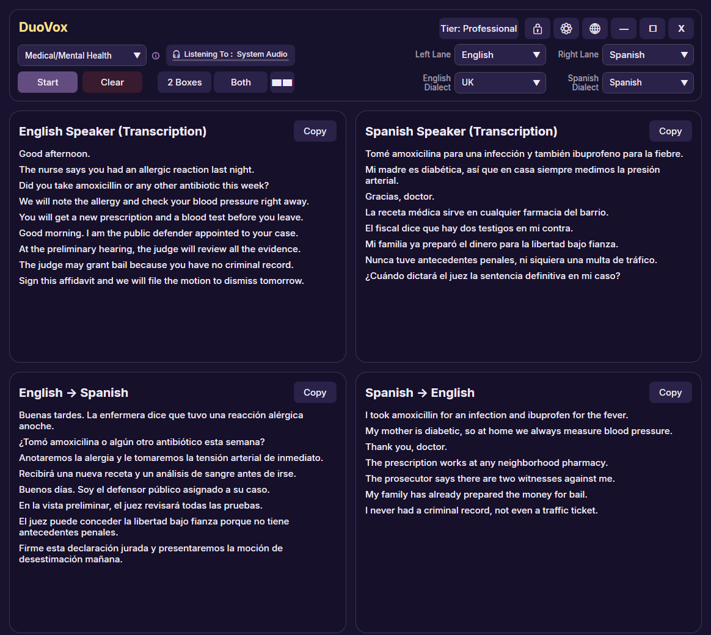

A live transcript beside you in legal and immigration interpreting
With a solicitor, at an immigration appointment or in a police interview, DuoVox writes down both sides of the conversation in both languages as it happens. A name, a date or an address stays on screen, so you can check it before you render it. DuoVox supports your interpreting; it never replaces it, and its text is not an official record.

Set up for legal and immigration work
- It speaks your specialism. Set the Topic to Medical/Mental Health, Legal/Immigration/Police or Education and DuoVox listens out for that field's terminology — on Professional, the full lists of several hundred terms each in English, with shorter lists in other languages.
- Add the words you meet. With Boost keywords, add the names, places and terms that keep coming up in your work.
- Your terminology, your way. In the Glossary, set how a name or term should be translated, and the AI translation is instructed to use it.
- Catch the details that matter. Numbers, names, addresses and medicines stay on screen after they are spoken, so you can check them before you render them.
- In the room or remote. Use a microphone face to face, or caption whatever your PC plays for telephone and video interpreting in Microsoft Teams, Zoom and other apps. Nothing joins the call and no plugin is needed.
- Private Mode for confidential sessions. Nothing is kept on your PC: no log files, copy and export are switched off, and the text is cleared when you stop. Audio is still processed in real time by our AI providers, as on every paid plan.
Professional: everything above, 40 hours a month
Professional includes 40 hours every month, and Pay-As-You-Go hours that never expire cover your busiest months. Want to try it first? The Free plan runs entirely on your PC in 31 languages, with no account and no internet connection, so no audio leaves your computer. See plans and prices.
Using DuoVox responsibly
- DuoVox is an assistive tool. It does not replace a qualified interpreter, and its output is not a certified, sworn or official translation or record.
- Automated transcription and translation can contain errors. Do not rely on DuoVox as the only source of meaning in medical, legal or other high-stakes situations: you remain professionally responsible for your interpretation.
- DuoVox is not a medical device and is not approved for clinical, diagnostic or treatment use.
- Follow your client's and your organisation's rules on confidentiality, recording and consent, and tell the people present that live captions are on where that is required.
- DuoVox is available for Windows 10 and Windows 11. It is not yet available in the EU or EEA.
More for interpreters, including medical and remote interpreting: DuoVox for interpreters.